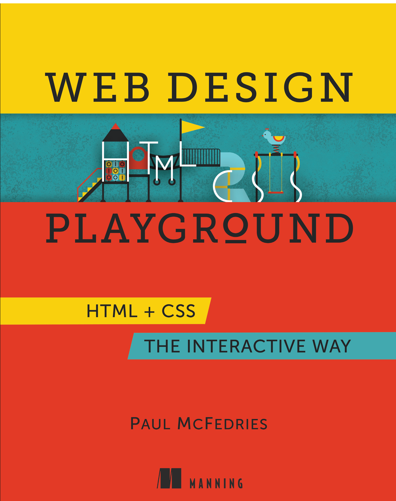

class: center, middle #### Ch. 2 ## Reflect on text structure --- class: left, middle ## The textbook: [](https://www.manning.com/books/web-design-playground) You can - read it for free from the [publisher's website](https://www.manning.com/books/web-design-playground) - buy the PDF or PDF+Physical book - find excerpts on our GitHub - learn-by-doing on the [playground](https://webdesignplayground.io/) --- ## HTML is neither Word nor Adobe - you work directly on the rendering, not on the source, which nonetheless exists. - it is __not__ oriented to the page. - It serves documents of arbitrary lenght, or *articles* - *page* is an engineering construct, it may or may not be implemented. - today the tendence is towards the one-page source, with long scrolling. --- ### so what should we do? - structure text along logical lines, e.g., lists, along the same lines of conference __slides__ - delimitation lines between book, article, web site and business/technical presentation are further blurring